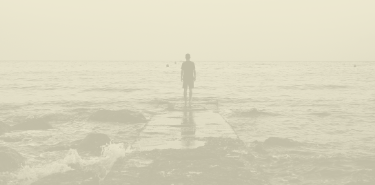

War

The unseen echoes of conflict
Lena woke up with a hangover after her late shift at the bar, which ended with a few drinks with her coworkers. She stayed in bed, letting the sunlight warm her skin. Her muscles ached from working double shifts, running around the bar, serving customers, and restocking supplies while loud music played. The music and chatter helped her get through each shift and lose herself in the noise, so she didn’t have to feel the pain. She kept to herself because she didn’t want anyone to know she had fled the war, still hurting from losing her family in a Russian attack. She only went out for a drink so she wouldn’t have to go back to her quiet room, where troubling thoughts waited for her.
Only her coworkers at the bar knew she was a Ukrainian refugee, but they didn’t know much else about her. Lena spoke little and didn’t trust anyone. Her journey through Poland to Berlin felt unreal, like she was just getting by. Some moments were so difficult that she couldn’t remember them at all.
That morning she was picturing her paintings, everything on those paintings was a memory of life before the war. Abstracts of pastel colours were her life of safety, struggle sometimes, but a Bohemian life. Dreaming of being in her studio made her feel like floating in a light of safety.
Police sirens on busy Berlin streets made her jump, her heart was beating fast. It was time to face another long day in the bar. The cold shower will calm her body down.